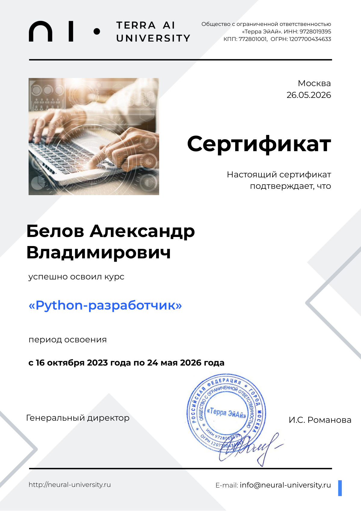
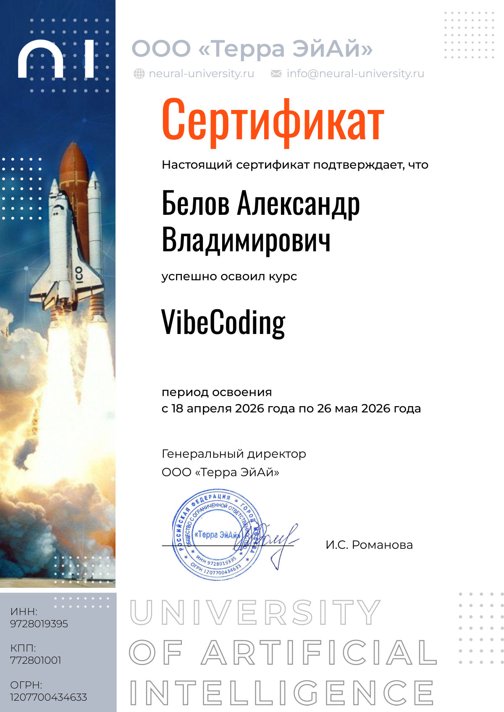
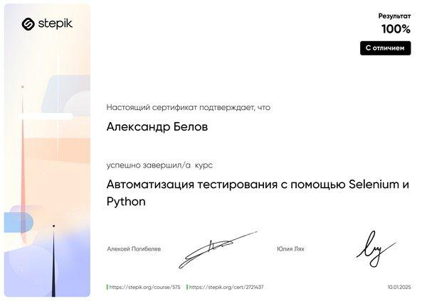
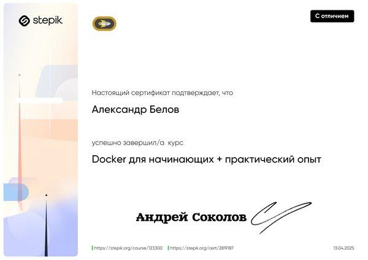

Python-разработчик | Fullstack | AI Integration
Привет! Я Python-разработчик с уникальным бэкграундом: 13 лет управлял производством и внедрял автоматизацию на заводе — до сентября 2026 года. Теперь пишу код, который решает реальные задачи.
Прошёл два курса Terra AI University: «Python-разработчик» (32 темы, 2023–2026) и «VibeCoding» (20 тем, 2026). Сертификаты — в разделе «Образование».
Защитил два диплома на одном проекте: платформа поиска работы на Django и AI-модуль, который анализирует требования вакансий, объясняет навыки через RAG и проводит тестовое собеседование.
В «Новахим» участвовал в разработке внутренней платформы автоматизации прайсов и подбора оборудования: единый React-фронтенд фаз 2 и 3, авторизация и роли, интеграции с Битрикс24, парсеры и расчёт КП. Обе фазы внедрены в production — благодарственные письма ниже.
Ищу позицию Junior Python Developer / Junior Fullstack Developer.
• Внедрил систему анализа дефицита материалов в реальном времени
• Разработал трекинг изделий по номеру договора
• Автоматизировал передачу сопроводительной документации
• Руководил штатом 35 человек
• Благодарственное письмо Ярославского муниципального района (2018)

Python-разработчик Terra AI University · 26.05.2026 Открыть PDF →
VibeCoding Terra AI University · 26.05.2026 Открыть PDF →
Selenium + Python Stepik · 10.01.2025 · с отличием Открыть на Stepik →
Docker для начинающих Stepik · 13.04.2025 · с отличием Открыть на Stepik →Стажировка по направлению автоматизации обработки прайсов, паспортов и сертификатов, подбора и сопоставления оборудования.
Фаза 2 — заявки, товары, поставщики, проверка цен и расчёт КП. Фаза 3 — подбор оборудования по прайс-листам с интеграцией Bitrix24. Обе системы внедрены в production.
Мой вклад: единый React-фронтенд обеих фаз (заявки, товары, поставщики, проверка цен), авторизация и ролевая модель, интеграция с бэкендом, загрузка прайсов и ценовых документов, парсеры, расчёт НДС и КП, перенос загрузки из Битрикс24. Отдельно — сервис извлечения технических характеристик Tech Docs Reader: визуальный маппинг таблиц, шаблоны ролей и LLM-подсказки.